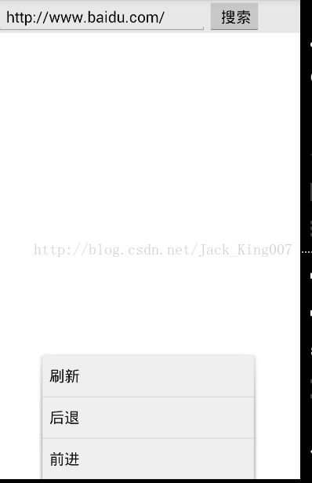

WebView之自定义浏览器（1）
这个小Demo主要是用来复习webview 的一些基本的用法。
一个浏览器基本功能
（1）输入地址 （2）确定 前进网站 （3）有扩大缩小网页 功能
点击 菜单按钮 有三个前进 刷新 后退
在加载的时候会出现提示框让用户等待
界面：

package com.example.WebviewDemo;
import android.app.Activity;
import android.app.ActionBar;
import android.app.Fragment;
import android.app.ProgressDialog;
import android.graphics.Bitmap;
import android.os.Bundle;
import android.text.TextUtils;
import android.view.KeyEvent;
import android.view.LayoutInflater;
import android.view.Menu;
import android.view.MenuItem;
import android.view.View;
import android.view.ViewGroup;
import android.view.Window;
import android.webkit.WebSettings;
import android.webkit.WebView;
import android.webkit.WebViewClient;
import android.widget.Button;
import android.widget.EditText;
import android.widget.ProgressBar;
import android.widget.Toast;
import android.os.Build;
public class MainActivity extends Activity {
private EditText editText;
private WebView webView;
private Button button;
private ProgressDialog bar;
@Override
protected void onCreate(Bundle savedInstanceState) {
super.onCreate(savedInstanceState);
//全屏没有标题栏
requestWindowFeature(Window.FEATURE_NO_TITLE);
setContentView(R.layout.activity_main);
bar = new ProgressDialog(this);
bar.setMessage("服务器有点走神");
editText = (EditText) findViewById(R.id.editText1);
webView = (WebView) findViewById(R.id.webview);
button = (Button) findViewById(R.id.button1);
//得到webview的设置管理
WebSettings settings = webView.getSettings();
//设置可以缩放
settings.setSupportZoom(true);
//设置可以控制缩放
settings.setBuiltInZoomControls(true);
webView.setWebViewClient(new WebViewClient() {
//在网页发生改变的时候 调用此方法
@Override
public void onPageStarted(WebView view, String url, Bitmap favicon) {
bar.show();
super.onPageStarted(view, url, favicon);
}
//在网页停止改变的时候 调用
@Override
public void onPageFinished(WebView view, String url) {
bar.dismiss();
super.onPageFinished(view, url);
}
});
}
@Override
public boolean onKeyDown(int keyCode, KeyEvent event) {
if (keyCode == KeyEvent.KEYCODE_BACK && webView.canGoBack()) {
webView.goBack();
return true;
}
return super.onKeyDown(keyCode, event);
}
public void btn(View view) {
String str = editText.getText().toString().trim();
if (TextUtils.isEmpty(str)) {
str = "http://www.baidu.com/";
}
webView.loadUrl(str);
}
@Override
public boolean onCreateOptionsMenu(Menu menu) {
menu.addSubMenu(0, 0, 0, "刷新");
menu.addSubMenu(0, 0, 1, "后退");
menu.addSubMenu(0, 0, 2, "前进");
return super.onCreateOptionsMenu(menu);
}
@Override
public boolean onOptionsItemSelected(MenuItem item) {
switch (item.getOrder()) {
case 0:
webView.reload();
break;
case 1:
if (webView.canGoBack()) {
webView.goBack();
} else {
Toast.makeText(this, "在点击即将推出", 0).show();
}
break;
case 2:
if (webView.canGoForward()) {
webView.goForward();
} else {
Toast.makeText(this, "在点击即将飞出太空", 0).show();
}
break;
}
return super.onOptionsItemSelected(item);
}
}